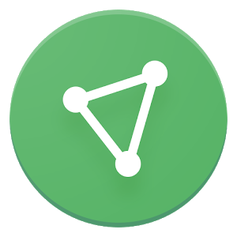

<!--Project 1-->
<!DOCTYPE html>
<html lang="en">
<html>
<head>
    <meta charset="utf-8">
    <meta name="viewport" content="width=device-width, initial-scale=1.0">
    <meta http-equiv="X-UA-Compatible" content="ie=edge">
    <title>Anon VPN</title><!--appears on tab of webpage-->
    <link rel="icon" href="images/proton_logo.png" alt="Anon VPN Logo">
    <link rel="stylesheet" type="text/css" href="https://fonts.googleapis.com/css?family=Open+Sans"><!--link to google fonts-->
    <link rel="stylesheet" type="text/css" href="css/master.css"><!--link to stylesheet-->
</head>

</html>
<body>
    <main>
        <header>
            
            <aside>
            <br />
                <p>Anon VPN</p>
            </aside>
            <h1>Features</h1>
        </header>
            <h2 id="greeting"></h2>
        <div id="left">
            <h1>VPN Security Features</h1><br>
            <p>
                We built AnonVPN with extra security features to make it better 
                at protecting your privacy than an ordinary VPN.
            </p><br>
            <p>
                When you use AnonVPN to browse the web, your Internet connection 
                is encrypted. By routing your connection through
                encrypted tunnels, AnonVPN's advanced security features ensure 
                that an attacker cannot eavesdrop on your connection.
                It also allows you to access websites that might be 
                blocked in your country.</p><br>
            <h1>Strong Encryption</h1>
            <p>
                We use only the highest strength encryption to protect your 
                Internet connection. This means all your network traffic
                is encrypted with AES-256, key exchange is done with 
                4096-bit RSA, and HMAC with SHA384 is used for message
                authentication.</p><br>
            <h1>Forward Secrecy</h1>
            <p>
                We have carefully selected our encryption cipher suites to 
                only include ones that have Perfect Forward Secrecy. This
                means that your encrypted traffic cannot be captured and 
                decrypted later if the encryption key from a subsequent
                session gets compromised. With each connection, we generate a 
                new encryption key, so a key is never used for more
                than one session.</p><br>
            
            <h1>Strong Protocols</h1>
            <p>
                We use only VPN protocols which are known to be secure - IKEv2/IPSec 
                and OpenVPN. ProtonVPN does not have any
                servers that support PPTP and L2TP/IPSec, even though they are 
                less costly to operate. By using ProtonVPN, you can
                be confident that your VPN tunnel is protected by the 
                most reliable protocol.</p><br>
            <h1>Physical Security</h1>
            <p>
                We have gone to extreme lengths to protect ProtonVPN's 
                Secure Core servers to ensure their security. Critical
                infrastructure in Switzerland is located in a former 
                Swiss army fallout shelter 1000 meters below the surface.
                Similarly, our Iceland infrastructure resides in a secure 
                former military base. Our servers in Sweden are also
                located in an underground data center. By shipping our own 
                equipment to these locations, we ensure that our servers
                are also secure at the hardware level.</p><br>
        </div>
        <div id="right">
            <button id="tier1" class="button" onclick=tierOne()>Tier 1 Features</button><!--tier one button-->
            <button id="tier2" class="button" onclick=tierTwo()>Tier 2 Features</button><!--tier two button-->
            <button id="tier3" class="button" onclick=tierThree()>Tier 3 Features</button><!--tier three button-->
            <button id="tier4" class="button" onclick=tierFour()>Tier 4 Features</button><!--tier four button-->
           
           <table id="complex-table" border="4" cellspacing="12">
               <thead>
                   <tr>
                       <th class="table">Pricing</th>
                       <th class="table">Countries</th>
                       <th class="table">Devices</th>
                       <th class="table">Speed</th>
                       <th class="table">Plus Servers</th>
                       <th class="table">Tor Servers</th>
                       <th class="table">Secure Streaming</th>
                   </tr>
               </thead>
               <tbody>
                   <tr>
                       <td id="price" class="table-content">Check the Buttons!</td>
                       <td id="countries" class="table-content"></td>
                       <td id="devices" class="table-content"></td>
                       <td id="speed" class="table-content"></td>
                       <td id="plus-servers" class="table-content"></td>
                       <td id="tor-servers" class="table-content"></td>
                       <td id="secure-streaming" class="table-content"></td>
                   </tr>
               </tbody>
            </table>
           <h1 id="current"></h1>
        </div>
   
        <footer>
            <p>Copyright&nbsp;&copy;&nbsp;Lantz&nbsp;2019-2025</p>
            <p>MATC School Project</p>
        </footer>
    </main>
        <script src="js/scripts.js"></script><!--Always put js link here, before end of body-->
</body>